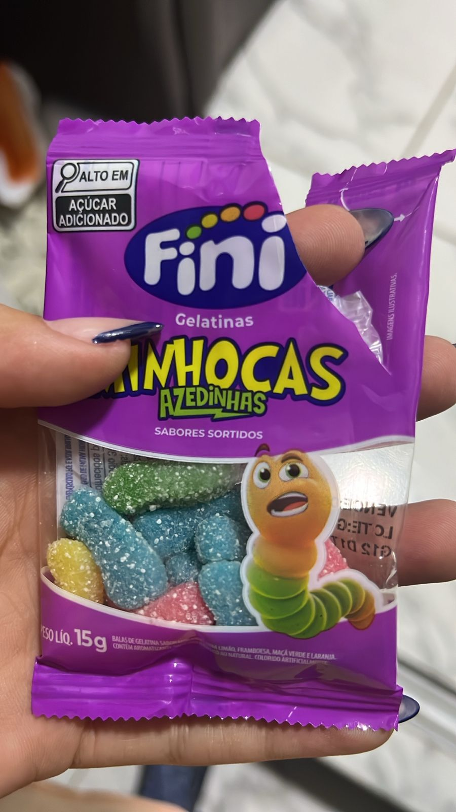
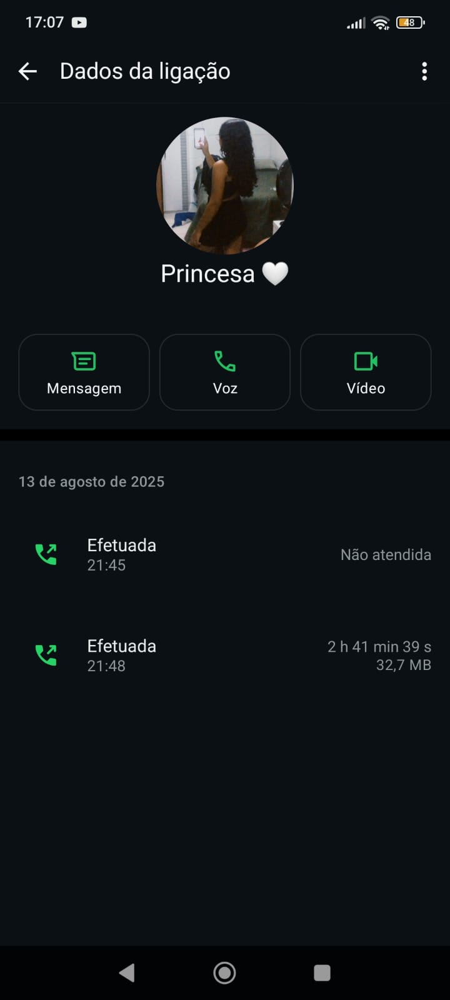
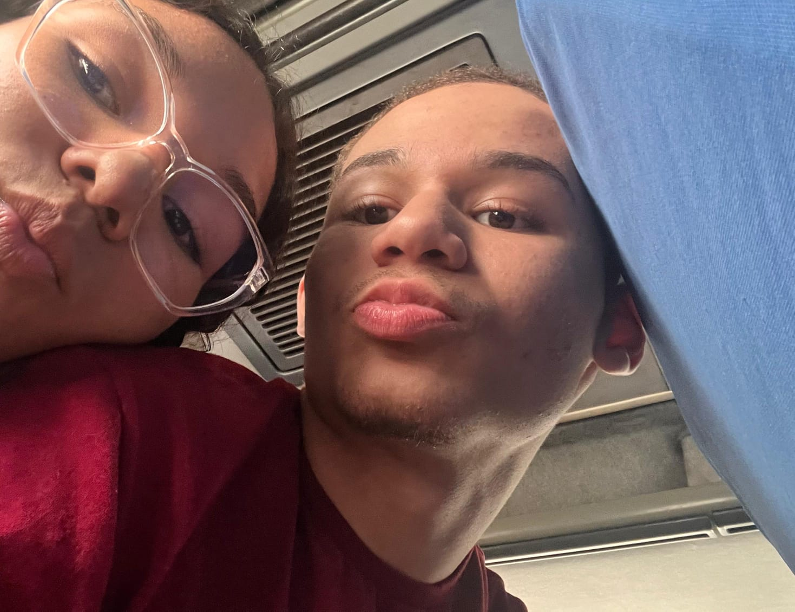
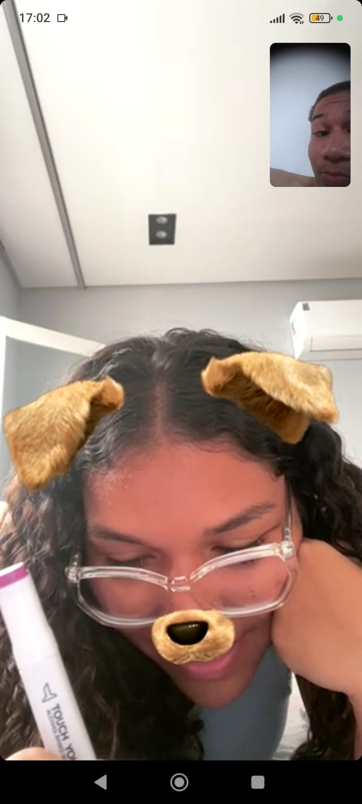

Mayara, é ate estranho te chamar pelo nome mas continuando ne? às vezes eu me pego te admirando e tentando entender como tive a sorte de te encontrar. Você não é apenas minha namorada. Você é o lugar onde meu coração se sente em casa. Admiro a pessoa que você é, seu sorriso que ilumina até a alma e como você torna tudo ao seu redor mais bonito. Estar ao seu lado todos os dias, é uma melhora pra mim mesmo. Eu amo quem somos juntos, eu amo voce
Em um dia comum, você me pediu uma atividade, sem maldade nenhuma. Eu estava um pouco ocupado com um hambúrguer, mas mesmo assim continuamos em uma conversa que parecia não ter fim. Sem perceber, aquilo virou rotina. Falar com você, contar tudo, dividir o di e foi uma das melhores coisas que me aconteceu. Quando eu precisei, você esteve lá. Quando você precisou, eu também estava. Éramos amigos. E, aos poucos, sem aviso, aquilo foi se transformando. Começamos a "voar" juntos, criamos piadas internas e tudo começou.

Te conheci aos 15, te vi fazer 16, e agora, já já você faz 17. E mesmo com o tempo passando, você continua sendo você, e sempre será.
Aos 16, de repente, aconteceu a nossa primeira call. Do outro lado o amor da minha vida Não era só uma ligação era estar contigo, era muito pra mim

Depois, veio a viagem da escola. Fomos juntos, ficamos juntos, voltamos juntos. E na volta… aconteceu aquela surpresa que só a gente sabe. Não foi planejado, não foi forçado. Você quis, eu quis, eu procurei e aconteceu. E dali pra frente, foi só acontecendo. De forma linda, leve e verdadeira. Adrian e Mayara. Pra sempre.

Continuamos juntos, conversando e planejando tudo, hoje é dia 15/01 dia da nossa primeira chamada de video

E eu também te disse "acho que vou fazer um presente" so pra nao deixar escondido, nos combinamos lembra? nada de mentiras e assim vai sendo, a verdade que estou fazendo desde ontem, hoje estamos namorando, oque era so planos, ideia, ansiedade, medo e julgamentos, virou realidade e muito amor! cada linha, cada codigo, cada erro de linha, cada hora pensando nao e nem metade doque eu faria por voce apenas uma demonstraçao to tao ansioso quanto voce imagina pra te entregar isso, mas estou deixando perfeito pra voce, Mayara a verdade que eu amo te amar, cada dia, cada minuto, segundo, milesimos, e voce so voce em minha mente, obrigado amor por me escolher e daqui pra frente vamos construir nossa historia de casal. EU TE AMO